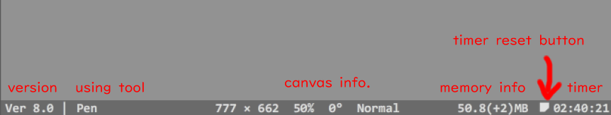

0.필수 세팅
1.툴 선택 방법
2.단축키
3.펜 옵션 박스
4.메뉴 버튼
5.리플레이 모드
6.프로그램 초기화
7.라소 툴 사용법
8.캔버스 크기 바꾸기
9.참고레이어 사용법
10.프로그램 사용 예시 <- 돌아가기
1.툴 선택 방법
2.단축키
3.펜 옵션 박스
4.메뉴 버튼
5.리플레이 모드
6.프로그램 초기화
7.라소 툴 사용법
8.캔버스 크기 바꾸기
9.참고레이어 사용법
10.프로그램 사용 예시 <- 돌아가기
필수 세팅
와콤 드라이버 설정 창을 열고 맵핑 탭의 "Windows 잉크 사용" 체크를 해제해 주세요, 사용 시 선이 이상하게 그어집니다.
와콤 이외의 타블렛에서는 테스트되지 않았습니다.
타블렛 펜 버튼 설정을 아래 그림과 같이 하는 것을 추천합니다.

툴 선택 방법
마우스 오른쪽 클릭을 누르면 툴 메뉴가 나타납니다.
이 때, 선택하고 싶은 툴 아이콘에 마우스를 갔다 댄 후 마우스 오른쪽 버튼을 떼세요.
캔버스 이동 툴은 마우스 오른쪽 클릭 후, 메뉴의 아무버튼이나 누른 채로 마우스를 드래그 하면 캔버스가 움직입니다. 예외 줌 툴, 회전 툴, 이미지 이동 툴은 클릭+드래그 해야합니다.
괄호안의 알파벳은 (오른손잡이 단축키, 왼손잡이 단축키) 입니다.
아래 동영상은 툴 박스의 사용법을 보여줍니다.
단축키
 단축키 배열은 위와 같습니다. 녹색 영역은 오른손잡이, 파란색 영역은 왼손잡이 용 입니다.
단축키 배열은 위와 같습니다. 녹색 영역은 오른손잡이, 파란색 영역은 왼손잡이 용 입니다.기본적인 사용법은 키를 누르고 있으면 활성화되고, 떼면 꺼집니다.
| 기능 | 단축키 | 기능 | 단축키 |
|---|---|---|---|
| 지우개 툴 | D 또는 J | 라소 툴 | R 또는 Y |
| 지우개-직선 툴 | Shift누른 채로D 또는 J | 직선 툴 | Shift |
| 펜 크기 조절 | F, V 또는 H, N | <- 지우개 크기 조절 D 또는 J를 누른채로 | |
| 펜 투명도 조절 | G 또는 B | <- 지우개 투명도 조절 D 또는 J를 누른채로 | |
| 캔버스 확대/축소 | W 또는 I | 캔버스 이동 | Space |
| 캔버스 좌우 반전 | A 또는 L | 캔버스 회전 | S 또는 K |
| 채우기 펜 | Q 또는 O | 캔버스 이미지 이동 | E 또는 Y |
| 색깔 선택 툴 | T | ||
| 작업취소 | Z 또는 . | 그리기 모드 | 1 또는 7 |
| 되돌리기 | X 또는 , | 리플레이 모드 | 2 또는 8 |
| 파일 저장 | Ctrl+S | 리플레이 재생 시작/정지 | Enter |
| 다른이름으로 저장 | Ctrl+Shift+S | 재생속도 조절 | ↑, ↓ |
| 캡쳐 모드 | Alt+S | 스트로크 단위로 프레임 탐색 | ←, → |
| 파일 불러오기 | Ctrl+O | 1프레임 단위로 프레임 탐색 | Shift+←, → |
| 참고 레이어로 파일 불러오기 | Ctrl+Shift+O | ||
| 참고 레이어에 클립보드 이미지 복사 | Ctrl+Shift+V | 클립보드에서 이미지 불러오기 | Ctrl+V |
| 전체 이미지 저장 | Alt+S |
| 이미지 회전 | S |
| 이미지 반전 | A |
| 캡쳐 모드 종료 | ESC |
펜 옵션 박스
 펜 프리셋, 손떨림 보정, 샤프 라인 옵션이 있습니다. 창의 빈 부분을 클릭+드래그 하면 박스를 이동 시킬 수 있습니다.
펜 프리셋, 손떨림 보정, 샤프 라인 옵션이 있습니다. 창의 빈 부분을 클릭+드래그 하면 박스를 이동 시킬 수 있습니다.마우스 오른쪽 클릭을 하면 창이 일시적으로 사라집니다. [1]: 펜 모양
[2]: 샤프 라인 켜기/끄기, 켜면 날카로운 선의 느낌이 납니다.
[3]: 손떨림 보정
[4]: 펜 크기
[5]: 펜 투명도
[6]: 펜 색깔 선택 창
[7]: 배경색 선택 창
[8]: drawr 컬러 프리셋, 컨트롤 키를 누른 상태로 클릭을 하면 배경색이 바뀝니다.
[9]: 컬러 히스토리, 컨트롤 키를 누른 상태로 클릭을 하면 배경색이 바뀝니다.
**스포이드로 선택한 색깔은 히스토리에 기록되지 않습니다. 색깔을 등록해 쓰고 싶다면 마우스 오른쪽 클릭하세요.
* 지우개와 펜(직선)의 크기,투명도 데이터는 따로 관리합니다.
 [1]: 현재 선택된 색
[1]: 현재 선택된 색[2]: 현재 펜 색. 이 버튼을 클릭하면 선택된 색을 초기화 할 수 있습니다.
---------------
메뉴 버튼
 메뉴 버튼은 창 아랫쪽 혹은 위쪽에 위치한 앱 정보 막대에 커서를 옮기면 나타납니다.
앱 정보에는
버전, 현재 사용하고 있는 툴, 캔버스 크기, 확대, 각도, 죄우반전 여부, 메모리 사용률, 타이머가 표시 됩니다. ---------------
 [1] 리플레이 모드
리플레이 모드/그리기 모드로 번갈아 가며 변경합니다. 리플레이 모드에 대한 설명은 여기를 참고하세요.
[2] 캡쳐 모드
이미지 일부만 저장하고 싶거나, 리플레이 모드에서 그려지고 있는 이미지를 저장하고 싶을때 이 버튼을 사용하세요.
[1] 리플레이 모드
리플레이 모드/그리기 모드로 번갈아 가며 변경합니다. 리플레이 모드에 대한 설명은 여기를 참고하세요.
[2] 캡쳐 모드
이미지 일부만 저장하고 싶거나, 리플레이 모드에서 그려지고 있는 이미지를 저장하고 싶을때 이 버튼을 사용하세요.저장하고 싶은 영역을 드래그 하면 파일명_날짜_시간.png 형식으로 저장 됩니다.
단축키는 Alt+S입니다. 사용법은 아래 동영상을 참고하세요.
 -1- 캡쳐모드 종료
-1- 캡쳐모드 종료-2- 전체 이미지 저장
-3- 캡쳐 이미지 회전
-4- 캡쳐 이미지 좌우 반전
-5- 캡쳐 이미지 배경색 제거/복원 [3] 저장
프로그램을 켜고 처음 저장할 때만 경로와 이름을 묻고, 그다음에는 자동으로 저장하게 됩니다.
새로운 경로와 이름으로 저장하고 싶다면, 오른쪽 클릭하거나 단축키 ctrl+shift+s를 누르세요.
*.png 파일과 *.2020 파일, 2개를 저장합니다. 2020 확장자의 파일은 배경이 투명색인 원래 이미지 데이터와, 리플레이 데이터를 담고 있습니다. 만일 이어서 그릴경우 2020확장자 파일을 불러오는것을 권장합니다.
극히 드문 경우이지만, 다른 프로그램에서 저장한 파일을 사용하고 있을경우 저장이 되지 않으므로. 파일 이름뒤에 "_new"라는 이름을 붙여서 다시 저장을 시도합니다.
단축키는 Ctrl+S이며, 다른 이름으로 저장은 Shift+Ctrl+S 입니다.
[4] 불러오기이미지 불러오기는 *.2020 파일과, *.png, *.gif, *.jpg를 불러올 수 있습니다. 파일 드래그&드롭 기능으로, 아이콘을 창에 끌어놓아 불러올 수도 있습니다.
프로그램에서 지원하는 최대 해상도는 2000x2000이며, 이미지가 이 해상도를 넘을 시 강제로 리사이즈 됩니다.
일반 불러오기 단축키는 Ctrl+O이고,
참고 레이어로 불러오기는 Ctrl+Shift+O입니다.
[5] 클립보드 이미지 불러오기
복사된 이미지가 있으면 이 버튼이 활성화 됩니다. 이 버튼을 두 번 누르거나 단축키 Ctrl+V키를 두 번 누르면 이미지를 불러옵니다 [6] 데이터 삭제
버튼을 3번 연속해서 누르면, 녹화된 리플레이 데이터와, 이미지를 지웁니다.
단축키 ESC를 3번 눌러도 지워집니다. [7] 툴 박스 켜기
툴 박스와, 펜 옵션 박스를 켭니다.
툴박스를 클릭+드래그 하면 캔버스 이동가 이동됩니다.
[8] 격자 켜기/끄기 클릭 할때마다 격자 크기가 변경되거나 꺼집니다. [9] 메뉴 위치 바꾸기
메뉴위치가 상하로 뒤바뀝니다. [10] UI색깔 바꾸기
클릭할때 마다 색깔이 변경됩니다. [11] 프로그램 정보
메뉴얼 링크와 프로그램 총 구동시간이 표시됩니다.
리플레이 모드
작업과정을 다시 볼 수 있는 모드입니다. mp4등의 동영상 변환은 지원하지 않습니다.
 [1] 캡쳐 모드
[1] 캡쳐 모드위에서 설명한 캡쳐모드와 같지만, 현재 재생되고 있는 이미지를 캡쳐합니다 [2] 리플레이 재생/정지 [3, 4] 앞 장면, 뒷 장면 보기
재 녹화나, 수퍼 되돌리기 기능을 사용할때, 원하는 프레임으로 이동할때 사용합니다.
클릭하면 스트로크 단위로 프레임을 끊어서 봅니다, 오른쪽 클릭(또는 Shift+클릭)하면 1프레임 단위로 탐색합니다.
이전 프레임을 탐색할때는 탐색 속도가 느려 질 수 있습니다. [5] 재 녹화
리플레이 모드에서 특정 이미지 부터 다시 녹화하고 싶은 경우, 이 버튼을 2번 누르세요. [6] 수퍼-되돌리기
그리기 모드에서는 되돌리기(undo)가 7번까지 되지만, 리플레이 모드에서는 모든 과정이 담겨있기 때문에
특정 지점부터 되돌리기 한 후에 다시 그리기가 가능합니다. 실행한 후에는 시간 탐색창의 빨간색 부분의 데이터가 지워집니다.
원하는 프레임으로 이동 후, 이 버튼을 2번 누르세요.
[7] 데이터 앞부분 자르기
현재까지 재생한 부분의 앞부분을 지웁니다.
이 기능과 수퍼-되돌리기 기능을 사용하면 원하는 부분의 데이터만 남길 수 있습니다.
버튼 활성화 조건은 수퍼-되돌리기와 같습니다.
 툴 사용방법은 위에서 설명한 툴 선택 방법과 같습니다.
툴 사용방법은 위에서 설명한 툴 선택 방법과 같습니다.(마우스 오른쪽 누른 후 원하는 아이콘에 커서를 위치한 후 떼기) [1] 캔버스 확대 축소 툴 [2] 캔버스 회전 툴 [3] 캔버스 자동 이동 툴
ON이 되면 아이콘에 AUTO라는 글자가 생깁니다.
이 기능은 자동적으로 캔버스를 이동하여 그리는 위치를 보여주는 기능입니다. [4] 재생 속도 조정 툴 선택하면 조절 막대가 생기는데, 죄우로 이동하면 속도가 빨라지거나 느려집니다.
x3 (34 sec)등의 정보는 3배속으로 재생했을때 전부 재생하는데 34초가 걸린다는 뜻입니다. 아래 동영상을 참고하세요
프로그램 초기화
창을 닫을 때 현재 이미지와 상태를 저장하고, 켜면, 그 데이터를 복원합니다.
프로그램 상태가 이상하거나, 초기 상태로 돌리고 싶은경우,
Shift키를 누른상태로 창을 닫으면 다음에 열때 초기화된 상태로 열립니다.
라소 툴 사용법
 라소툴을 선택후 캔버스에 수정하고 싶은 영역을 그립니다.
라소툴을 선택후 캔버스에 수정하고 싶은 영역을 그립니다.[1] 캔버스 회전
클릭+드래그로 캔버스를 회전 합니다. [2] 캔버스 이동
클릭+드래그로 캔버스를 이동 합니다. [3] 캔버스 확대/축소
클릭+드래그로 확대/축소 합니다. [4] 이미지 복사
선택된 이미지를 복사합니다. [5] 이미지 이동
클릭+드래그로 이미지를 이동 시킵니다. 방향키로 1픽셀식 움직일 수도 있습니다. [6] 이미지 1픽셀씩 이동 [7] 이미지 좌우 반전
클릭 할 때마다 이미지가 좌우로 반전 됩니다. [8] 이미지 회전
클릭+드래그로 이미지를 회전 시킵니다. [9] 이미지 크기
클릭+드래그로 이미지 크기를 조절 합니다. 아래 동영상을 참고하세요 아래 동영상은 라소툴 복사 기능을 이용한 선화 트릭입니다.
캔버스 크기 바꾸기
캔버스의 회색 테두리를 마우스 오른쪽 클릭을 하면 하늘색으로 색이 바뀝니다.
그 상태에서 마우스 왼쪽 클릭을 한 후 커서를 움직여주세요.
캔버스 밖을 나간 이미지 데이터는 사라집니다.
최대크기는 2000x2000픽셀입니다.
단축키 Ctrl키를 누른상태로, 캔버스 테두리를 클릭+드래그 해도 크기를 바꿀 수 있습니다.
아래 동영상을 참고하세요.
참고 레이어 사용법
참고 레이어는 메인 캔버스 아랫쪽에 있는 레이어로 그림 트레이싱이나 밑그림 등에 사용할 수 있습니다. 리플레이 데이터에는 녹화되지 않습니다.

참고 레이어 아이콘을 클릭하게 되면 위와 같은 박스가 나타납니다. [1] 현재 캔버스의 이미지를 참고레이어로 이동 시킵니다.
클릭할 때마다 참고레이어 그림이 덮어 씌워 지므로 주의하세요.
이 버튼을 2번 연속으로 누르면 참고 레이어의 이미지를 청소 할 수 있습니다.
클릭 후, 지워진 메인 레이어의 이미지는 작업취소(undo)를 이용해 복원할 수 있습니다. [2] 이미지 파일을 선택해 참고레이어로 사용할 수 있습니다. 파일 드래그&드롭 기능을 이용해 불러올때는, 불러오기 메뉴에서 reference layer를 선택하세요. [3] 클립보드에 복사된 이미지를 참고 레이어로 이동 시킵니다. [4] 참고레이어의 투명도를 조절합니다. [5] 참고레이어를 클릭+드래그로 이동 시킵니다. [6] 참고레이어를 클릭+드래그로 회전 시킵니다. [7] 참고레이어를 좌우 반전 시킵니다. [8] 참고레이어 크기를 클릭+드래그로 조절합니다. 아래 동영상은 참고 레이어를 사용하는 동영상입니다.